Gestoomde Makreel
Warm gerookte Makreel, lekker en gezond voor op de boterham, mooie zachte structuur, ook verkrijgbaar in filets of kwart stukken
vanaf €1,85 p/100 gr. Elke vrijdag hele Makreel €4,85 p/stuk
Al onze gerookte vis wordt op ambachtelijke wijze gerookt, de meeste van onze gerookte producten zijn suikervrij en wij fileren zelf onze makreel. Onze Hollandse garnalen worden in Nederland gepeld, dit betekent dat er veel meer smaak aan zit, omdat er minder conserveringsmiddelen op zit.
Onze salades maken we zelf met de beste ingrediënten. Vooral onze huisgemaakte krabsalade met alleen echte krab (en dus geen surimi) is beroemd.
Warm gerookte Makreel, lekker en gezond voor op de boterham, mooie zachte structuur, ook verkrijgbaar in filets of kwart stukken
vanaf €1,85 p/100 gr. Elke vrijdag hele Makreel €4,85 p/stuk
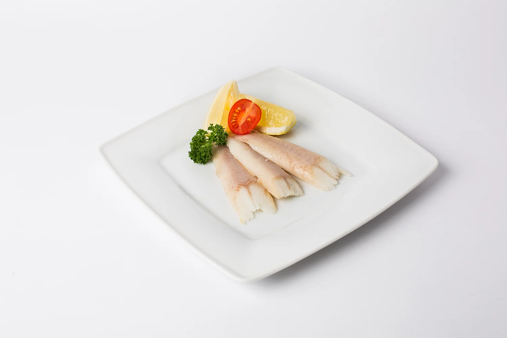
Verse gerookte palingfilet.
Dagprijs
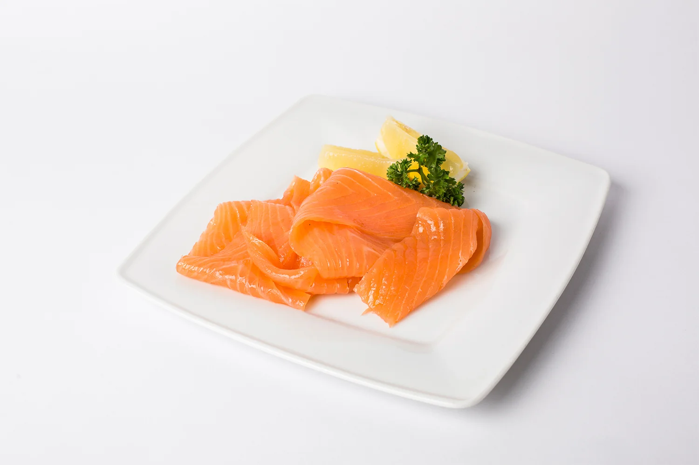
Gerookte zalmfilet (kweek) van Schotse afkomst.
Dagprijs
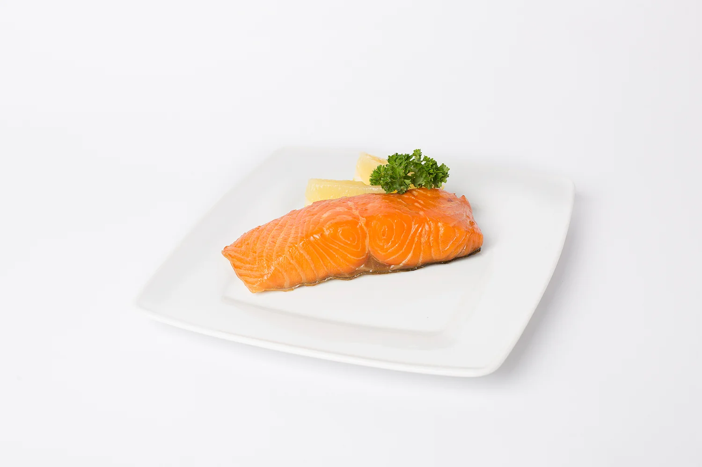
Warm gerookte zalmmoot (gestoomd).
Dagprijs
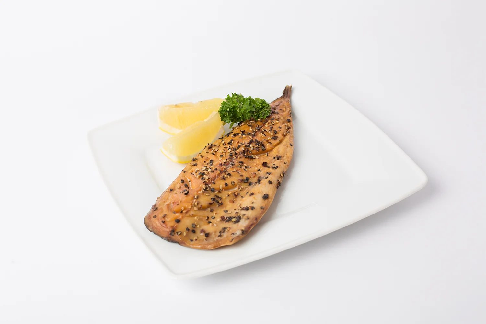
Lekker pittige pepermakreelfilet.
€2,85 p/100 gr
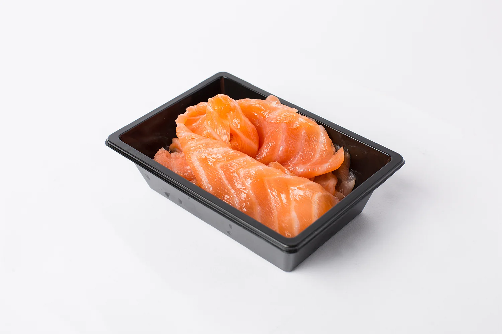
Gerookte zalmsnippers (kweek).
Dagprijs
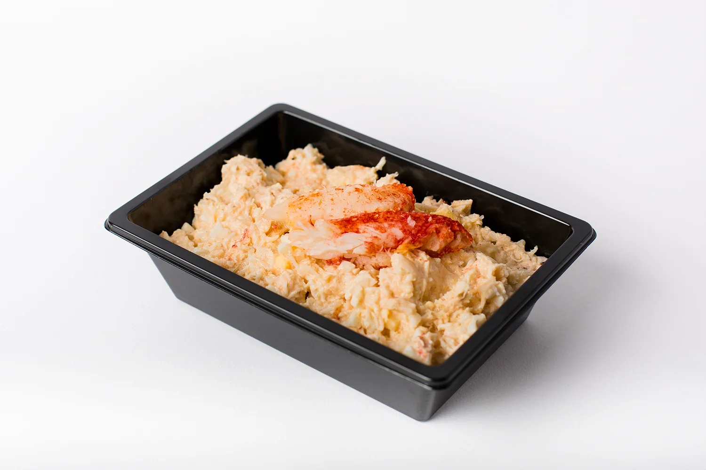
Lekkere krabsalade zonder surimi.
Dagprijs
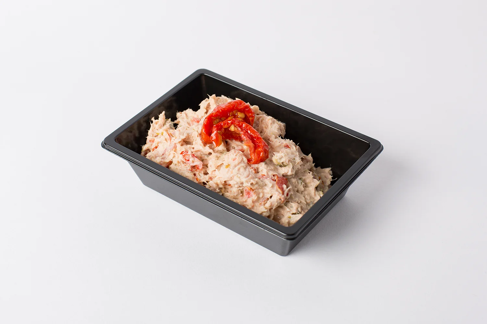
Lekkere tonijnsalade, zelfgemaakt.
€3,15 p/100 gr
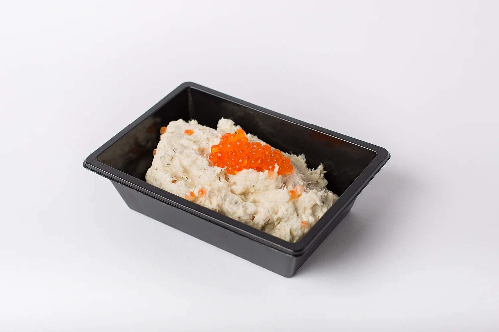
Zachte forelsalade.
€3,65 p/100 gr
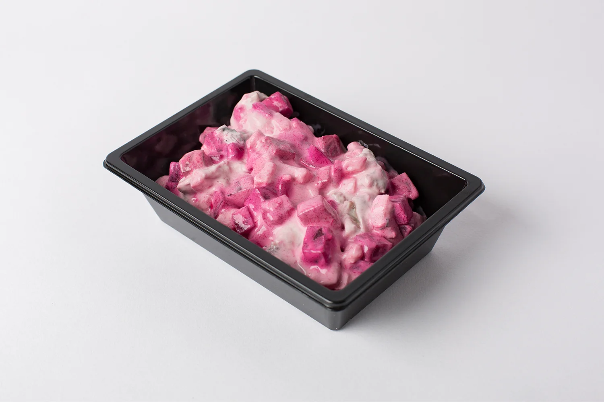
Heerlijke zelfgemaakte haringsalade met bietjes.
€2,55 p/100 gr
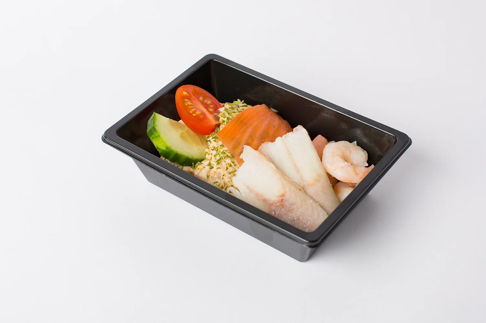
Ons visslaatje, ook wel zalmslaatje genoemd is een kleine luxe salade. De basis is aardappelsalade met zalm. Gegarneerd met garnalen, gerookte paling en gerookte Schotse zalm.
€3,80 p/stuk
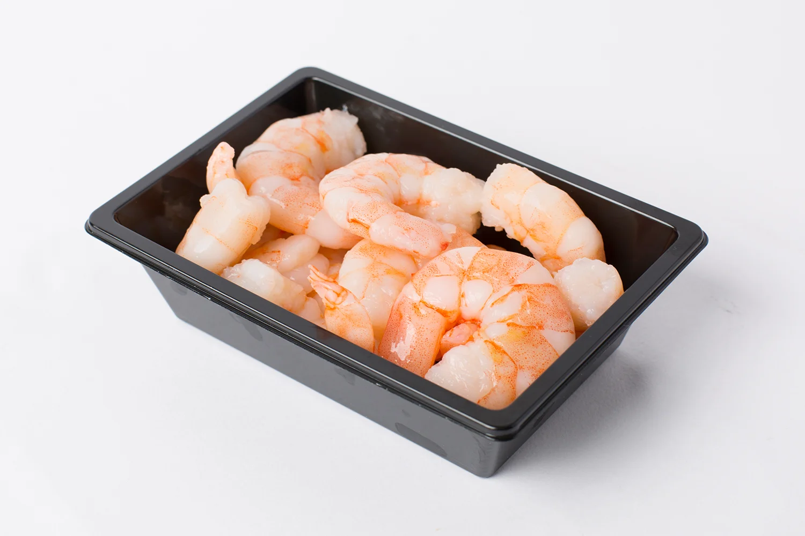
Grote garnalen uit Sri Lanka.
€4,55 p/100 gr
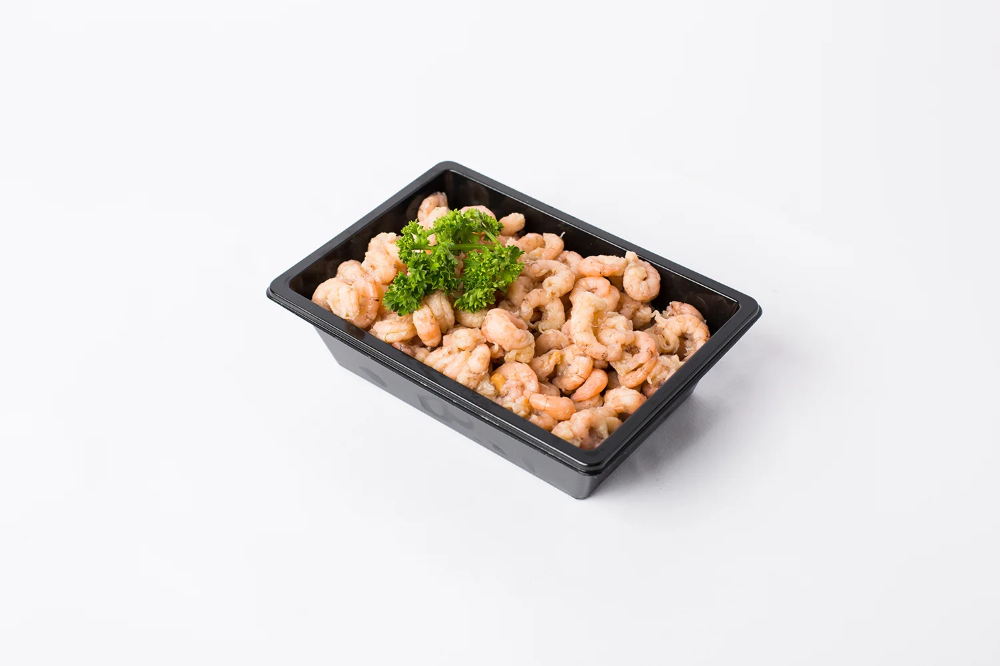
Hollandse garnalen, in Nederland gepeld.
Dagprijs
Geef uw bestelling twee dagen van tevoren door, wij maken 'm voor u klaar om op te halen aan de Buitenwatersloot.